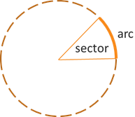

Angle Measure
Trigonometric Functions
Trigonometric Functions
A couple basic applications of angles involve arcs and sectors. An arc is the part of a circle traced by the termial side as it rotates about a vertex angle located at the center of the circle. A sector is the wedge shape formed by the initial side, terminal side, and the arc along the circle.
In fancy mathematical terms, we say the arc subtends the central angle of the circle of given radius.
Conceptual setup and simple example
For a circle of radius \(r\), the length of the arc that subtends a central angle \(\theta\) in radians is given by \(s = \theta r\).
Example: Find the length of the arc that subtends a central angle of 30° for a circle of radius 12 feet.
First, remember that we need the angle to be in radians before we can use the arc length formula. So let's convert 30° to radians.
\[30^{\circ} \times \frac{\pi}{180^{\circ}} = \frac{3\pi}{18} = \frac{\pi}{6}\]Now we can apply the arc length formula where \(\theta = \frac{\pi}{6}\) and \(r = 12\) ft.
\[s = \theta r = \left(\frac{\pi}{6}\right)(12 \text{ ft}) = 2\pi \text{ ft}\]Caution: Be aware that if you forget to convert the given angle to radians at the beginning, then you would get \(s = 360^{\circ}\text{ft}\) as your answer. Notice that the units here become \({}^{\circ}\text{ft}\), which is not a normal unit of length. This is because radians are a dimensionless unit and can be ignored. The radian measure is just a raw number. This is not true for degrees.
For a circle of radius \(r\), the area of the sector with central angle \(\theta\) in radians is given by \(A = \frac{1}{2}r^2\theta\).
Example: Find the area of the sector of a circle with a radius of 8 cm having a central angle \(\frac{\pi}{4}\).
Since the angle is already given in radians, we can plug the given values into the sector area formula and compute.
\[A = \frac{1}{2}r^2\theta = \frac{1}{2}(8 \text{ cm})^2\left(\frac{\pi}{4}\right) = \frac{64\pi}{8}\text{ cm}^2 = 8\pi \text{ cm}^2\]©2024 M4thG33x (new window) Some Rights Reserved.